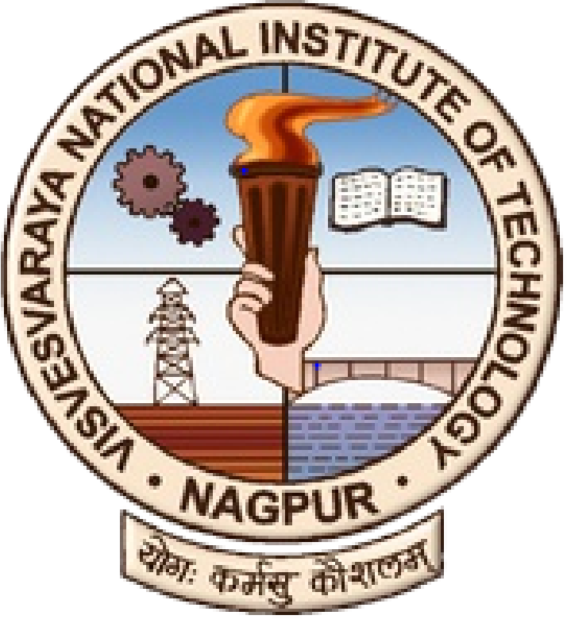
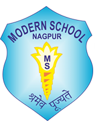

Welcome to my website!
Although the universe itself isn't a conscious entity, it possesses the raw materials that, when properly set into motion, create consciousness. It has the ability to create intelligent life, which is capable of understanding the universe ... It can know itself indirectly- Arthur Byron Cover
The increase in the level of living standards of individuals has a direct correspondence with the development of new materials with improved properties. Replacing conventional materials with the most advanced materials is vital for the efficient usage of resources. Consequently, it is essential to have profound knowledge and understanding of the selection of the materials by studying their microstructure, composition, properties, and processing techniques and developing new materials for an extensive range of applications.
I am a Materials Science Engineer, incited by nature and its components like the living creatures, vegetative environment, flora-fauna, and numerous matters which shape our everyday life. My interest in materials science and living nature has inspired me to pursue research in biomimicry materials, which emulates the models and components of nature to solve real-world problems. Biomimetic materials designing, through a multidisciplinary approach, possess tremendous potential to shape future technology, making it more sustainable and renewable. This is my motivation to study and further improve my knowledge and understanding of the materials which shape our lives daily.
| Softwares | Origin Pro, ImageJ, Autodesk Fusion 360, Adobe Photoshop & Illustrator, MS-Office |
| Characterization Techniques | Scanning Electron Microscopy (SEM), X-Ray Diffractometer (XRD) |
| Programming languages | C, C++ |
|  |
B.Tech in Metallurgical and Materials Engineering
Grad. June 2022 Visvesvaraya National Institute of Technology, Nagpur, India Cumulative Grade Points Average (CGPA) - 9.17/10 Current Department Rank - 3 |
|
Higher Secondary School Certificate (12th Grade)
2018 Maharashtra State Board of Secondary and Higher Secondary Education Score: 89.34% |
|
|  |
Secondary School Certificate (10th Grade)
2016 Central Board of Secondary Education (CBSE) Score: 94.40% |
Grad. June 2022
Visvesvaraya National Institute of Technology, Nagpur, India
Cumulative Grade Points Average (CGPA) - 9.17/10
Current Department Rank - 3
2018
Maharashtra State Board of Secondary and Higher Secondary Education
Score: 89.34%
2016
Central Board of Secondary Education (CBSE)
Score: 94.40%